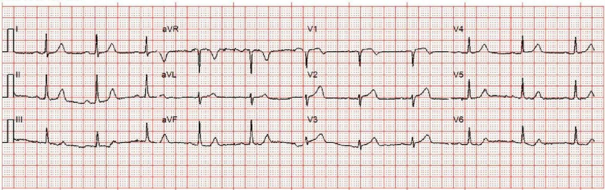
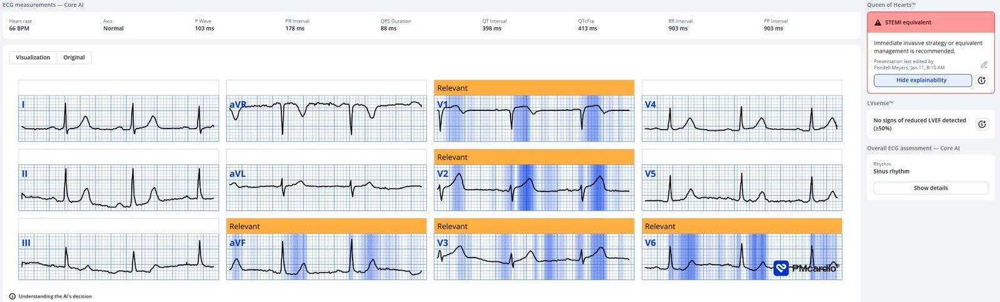
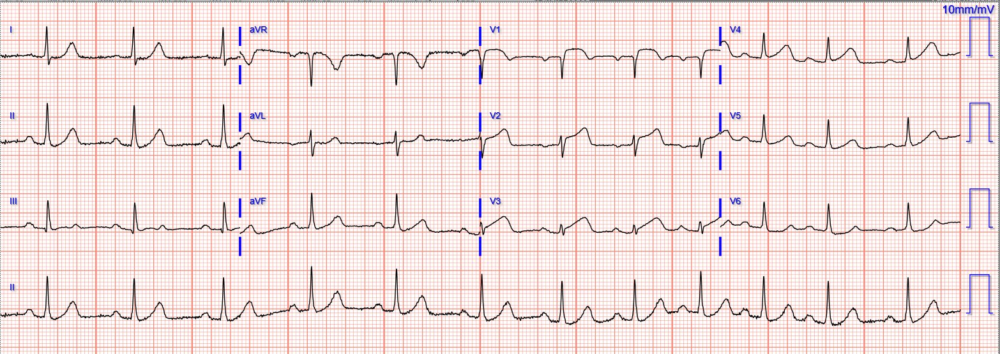
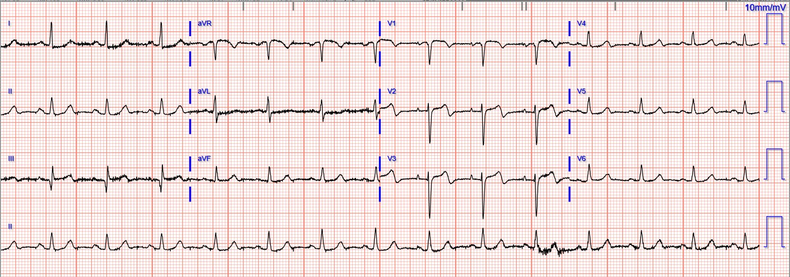
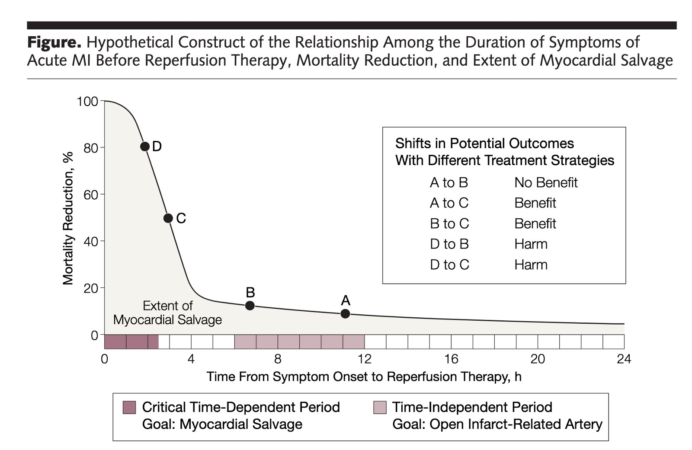
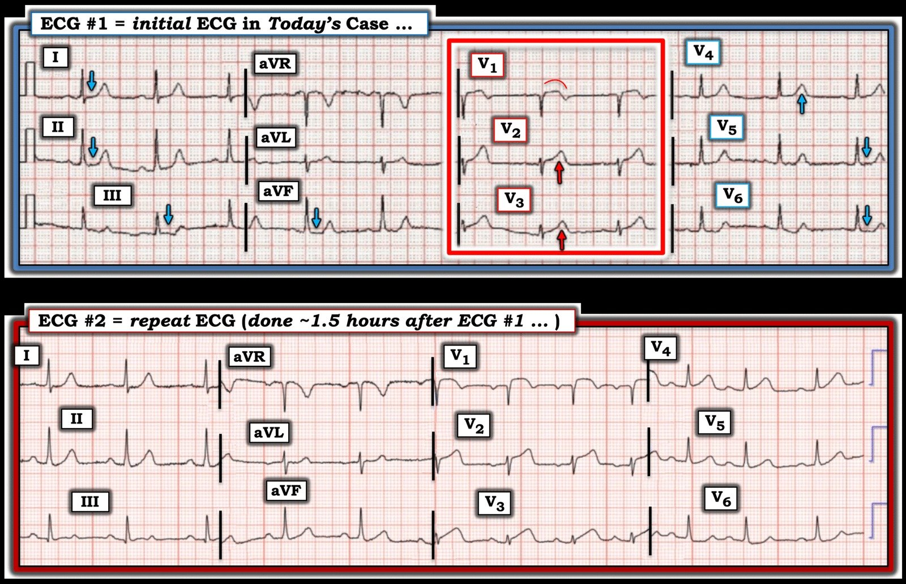

15/01/2026 — Một phụ nữ ở độ tuổi 60 bị đau ngực và kết quả đọc “Không phải STEMI”
Bản dịch tiếng Việt của bài "A woman in her 60s with chest pain and “No STEMI”" – Dr. Smith’s ECG Blog. Giữ nguyên toàn bộ 6 hình ảnh và 1 video của bản gốc.
Gửi bởi một người giấu tên.
Một phụ nữ ở độ tuổi 60 đến viện vì đau ngực cấp, dấu hiệu sinh tồn bình thường. Đây là điện tâm đồ lúc phân loại (triage):


Bạn nghĩ gì?
Điện tâm đồ cho thấy các dấu hiệu chẩn đoán tắc cấp LAD, bao gồm hình ảnh xoáy trước tim (Precordial Swirl) (ST chênh lên (STE) không tương xứng và sóng T tối cấp (HATW) ở V1-V2/V3, cùng ST chênh xuống (STD) soi gương ở V5-V6).
Smith: có sóng T tối cấp ở V2-3, sóng T dạng xuống-lên (down-up) ở III, aVF và V6. Tất cả đều có độ đặc hiệu rất cao đối với nhồi máu cơ tim do tắc (OMI) LAD.
Đọc thêm về hình ảnh xoáy trước tim trong bài báo của chúng tôi và bài blog này:
Đáng tiếc là nó được đọc là “Không phải STEMI”, đó cũng là giới hạn của việc giảng dạy và thực hành điện tâm đồ thông thường trong phần lớn thực hành lâm sàng.
Đây là kết quả đọc của PMcardio Queen of Hearts (QOH):


Ứng dụng PMcardio for Individuals 3.0 mới nay đã có mô hình Queen of Hearts mới nhất và khả năng giải thích của AI (bản đồ nhiệt màu xanh)! Tải ngay cho iOS hoặc Android. https://www.powerfulmedical.com/pmcardio-individuals/ (BS. Smith và BS. Meyers đã huấn luyện mô hình AI này và là cổ đông của Powerful Medical). Là thành viên cộng đồng của chúng tôi, bạn có thể dùng mã DRSMITH20 để được giảm 20% độc quyền cho năm đầu tiên của gói thuê bao hằng năm. Tuyên bố miễn trừ: Một số mô-đun AI ECG là thiết bị y tế mang dấu CE theo EU MDR và chỉ được chứng nhận lưu hành tại Liên minh châu Âu và Vương quốc Anh. Công nghệ PMcardio chưa được Cục Quản lý Thực phẩm và Dược phẩm Hoa Kỳ (FDA) cho phép sử dụng lâm sàng tại Hoa Kỳ.
Bác sĩ quyết định cho làm xét nghiệm, bao gồm troponin, trước khi có bất kỳ hành động đáng kể nào.
Troponin ban đầu là 48 ng/L. Kết quả này dẫn đến việc ghi lại điện tâm đồ, 1,5 giờ sau bản đầu tiên:


Bản này được đọc là “STEMI”, nên phòng thông tim (cath lab) được kích hoạt.
Chỗ tắc đoạn giữa LAD đã được mở thông.
Các lần đo troponin lặp lại tăng lên >25.000 ng/L (quá cao để đo được — có thể đã vượt 100.000 ng/L)
Một điện tâm đồ ghi lại được thực hiện vài giờ sau thông tim:


Siêu âm tim chính thức cho thấy:
Chức năng tâm thu thất trái giảm nhẹ với LVEF 40%
(+/-5%) đo bằng 3D. Có giảm động nặng đến vô động ở thành trước vách và dưới vách từ đoạn giữa đến mỏm. Có giảm động nặng ở thành dưới mỏm, thành trước mỏm và thành mỏm.
Tôi nghĩ rằng kết cục lâu dài của bệnh nhân này sẽ tốt hơn nếu họ được nhận ra và điều trị sớm hơn 1,5 giờ.
Smith bình luận:
Hãy nhớ biểu đồ này: Đến 4 giờ sau khi khởi phát đau ngực, 80% lợi ích của tái tưới máu đã mất!!
Pendell sẽ trình bày một bản tóm tắt tại hội nghị ACC ở New Orleans. Trong đó, 380 (19%) trong số 2000 lần kích hoạt phòng thông tim có điện tâm đồ ban đầu “không chẩn đoán”. Thời gian trì hoãn trung bình giữa điện tâm đồ ban đầu không chẩn đoán đó và điện tâm đồ “STEMI” sau đó là 74 phút. Trên 297 (78%) trong số 380 điện tâm đồ không chẩn đoán đó, Queen of Hearts đã phát hiện được OMI sớm trung bình 68 phút trước điện tâm đồ STEMI. Tỷ lệ tử vong ở những bệnh nhân này là 9,4%.


= = =
======================================
BÌNH LUẬN CỦA TÔI, bởi KEN GRAUER, MD (15/1/2026):
Điểm quan trọng cần học từ ca hôm nay rất đơn giản: Khi còn chút nào không chắc chắn liệu một bệnh nhân mới đau ngực (Chest Pain, CP) có đang trong một biến cố tim cấp đang diễn ra hay không — Ghi lại điện tâm đồ trong vòng 15-20 phút! Dù có thể sẽ không thấy thay đổi đáng kể nào khi ghi lại điện tâm đồ ban đầu trong khoảng thời gian ngắn 15 đến 20 phút này — Chúng tôi đã minh họa rất nhiều ví dụ trên Dr. Smith’s ECG Blog, trong đó sóng ST-T tiến triển rõ rệt trong một khoảng thời gian ngắn đến bất ngờ! (Xem Bình luận của tôi trong bài ngày 7 tháng Mười Hai năm 2025 — và bài ngày 9 tháng Bảy năm 2025, cùng nhiều bài khác).
- Và nếu đau ngực vẫn tiếp diễn mặc dù không có thay đổi đáng kể trên điện tâm đồ ghi lại sau 15 đến 20 phút kể từ bản ghi ban đầu — Ghi lại điện tâm đồ thêm một lần nữa trong vòng 15 đến 20 phút tiếp theo. Nếu đau ngực của bệnh nhân là do thiếu máu cục bộ cấp — rất có khả năng (các) điện tâm đồ ghi lại giờ đây sẽ cho thấy một số thay đổi sóng ST-T “động” (dynamic) cho phép bạn chẩn đoán xác định.
- Lý do phải khẩn trương đánh giá (và thông tim kèm PCI khi có chỉ định) — rất đơn giản = “Thời gian là cơ (cơ tim)”. Như đã nhấn mạnh trong bài ngày 23 tháng Mười năm 2025 (và trong biểu đồ BS. Smith đã thêm ở trên) — Lợi ích lớn nhất của tái tưới máu đạt được trong 4 giờ đầu (Mỗi 2 giờ trì hoãn làm cho lượng cơ tim bị nhồi máu tăng thêm 60%).
= = =
Điện tâm đồ ban đầu đã có giá trị chẩn đoán chưa?
Xem kỹ điện tâm đồ ban đầu của ca hôm nay (mà tôi đã đánh dấu trong Hình 1) — bản ghi này đã có giá trị chẩn đoán, không cần chờ troponin hay một bản ghi lại trước khi kích hoạt phòng thông tim.
- Nhịp xoang — các khoảng và trục bình thường, không có lớn buồng tim.
- “Mắt” tôi bị thu hút ngay lập tức vào các chuyển đạo phía trước V1,V2,V3 (trong khung chữ nhật MÀU ĐỎ ở Hình 1). Xét đến biên độ nhỏ của QRS ở các chuyển đạo này — các sóng ST-T đi kèm rõ ràng là không “bình thường”
- Sóng ST-T ở chuyển đạo V1 chắc chắn bất thường, ở chỗ ST chênh lên nhiều hơn mức nên thấy ở chuyển đạo này khi điện tâm đồ không có LVH và không có QRS giãn rộng — thêm vào đó hình dạng đoạn ST ở chuyển đạo V1 có dạng vòm (coving) bất thường, và kết thúc bằng sóng T đảo ngược bất thường.
- Ở các chuyển đạo V2,V3 — QRS rất nhỏ! Do đó — các sóng ST-T ở những chuyển đạo này rõ ràng là không tương xứng (đỉnh đầy đặn hơn và đáy rộng hơn mức nên có so với các phức bộ QRS nhỏ xíu này).
- Đánh giá sóng T ở chuyển đạo V4 khó hơn — nhưng theo khái niệm chuyển đạo lân cận (tức là các sóng T tối cấp chắc chắn ở chuyển đạo V2,V3) — sóng T ở chuyển đạo V4 “đồ sộ” hơn mức nên có.
- Thay đổi ST-T ở các chuyển đạo còn lại tinh tế hơn — nhưng với sóng ST-T tối cấp ở các chuyển đạo V1-V4 ở bệnh nhân mới đau ngực này — tôi đọc các đoạn ST ở các chuyển đạo I,II,III,aVF; và V5,V6 là chắc chắn bị dẹt (và ST chênh xuống nhẹ mà ta thấy ở chuyển đạo V6, đi kèm các dấu hiệu ở chuyển đạo phía trước, gợi ý “xoáy trước tim” (Precordial Swirl) — theo nhiều ví dụ mà BS. Meyers và BS. Smith đã đưa ra, và Bình luận của tôi ở cuối trang trong bài ngày 15 tháng Mười năm 2022).
= = =
Khi điện tâm đồ cuối cùng cũng được ghi lại …
Bản ghi phía dưới trong Hình 1 cho thấy sự tiến triển rõ ràng của STEMI cấp này. Nhưng vấn đề là phần lớn lợi ích tiềm năng của tái tưới máu đã bị mất do 1,5 giờ trì hoãn này, một sự trì hoãn lẽ ra không cần phải có.
- ĐIỂM THEN CHỐT (PEARL): Nếu bạn thấy khó nhận ra các sóng ST-T tối cấp ở từng chuyển đạo mà tôi nêu ở trên trong điện tâm đồ #1 (tức là ở các chuyển đạo V1,V2,V3 và V4) — Hãy so sánh 2 bản ghi trong Hình 1. Xem lại điện tâm đồ ban đầu sau khi đã thấy các bản ghi liên tiếp tiến triển ra sao — là cách TỐT NHẤT để cải thiện khả năng phát hiện ngay tức thì những thay đổi sóng ST-T tinh tế-nhưng-chắc-chắn-có trên điện tâm đồ ban đầu của bệnh nhân!
= = =
Hình 1: So sánh giữa điện tâm đồ ban đầu trong ca hôm nay (mà tôi đã đánh dấu) — với điện tâm đồ ghi lại ~1,5 giờ sau đó.


= = =
= = =